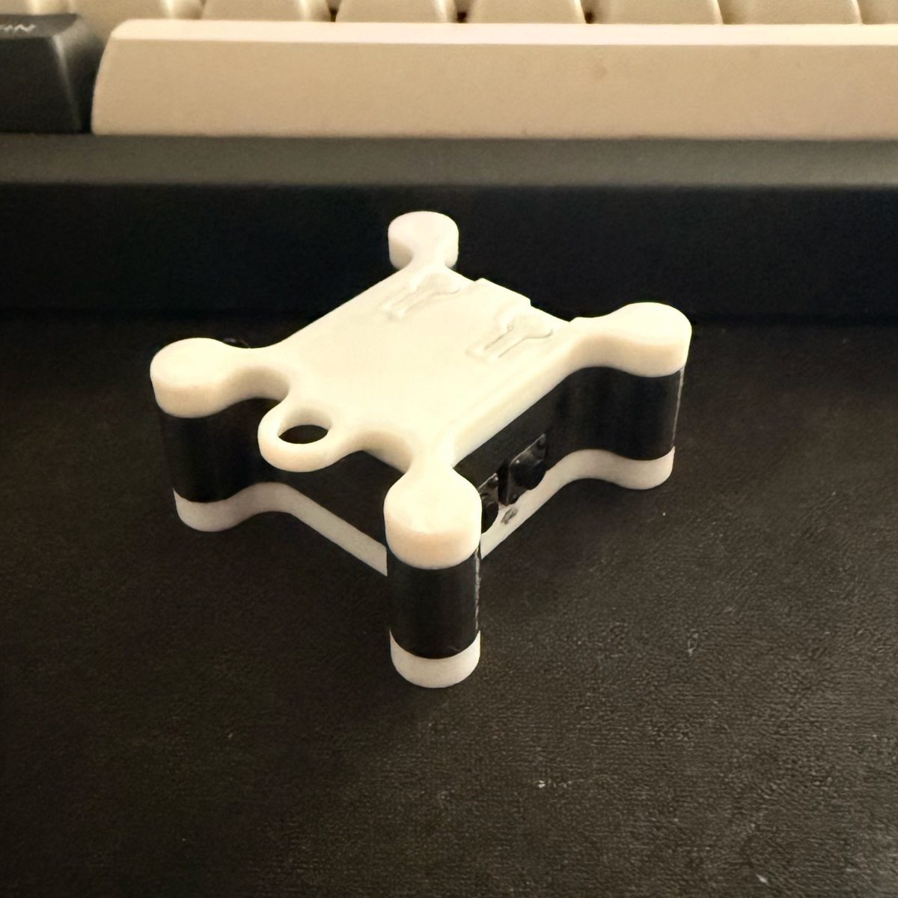
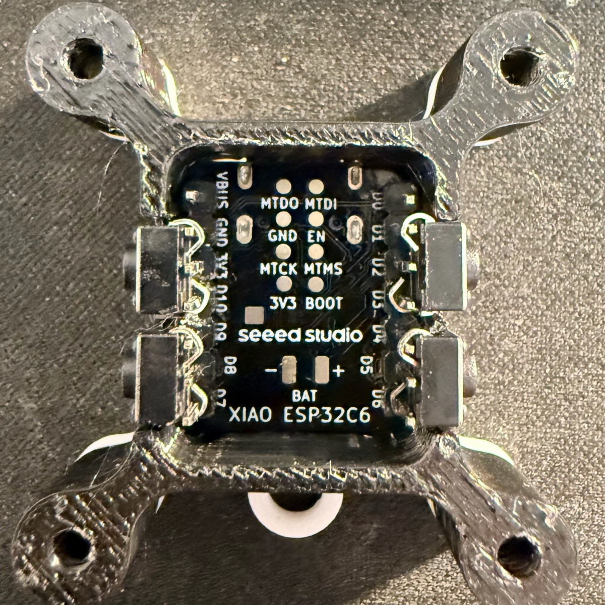

ESP32-C6 · Matter · Thread · 3D print
Micro Matter Switch


| GPIO 18 (D10) | GND | |
| GPIO 17 (D7) | GPIO 20 (D9) LOW | |
| GPIO 1 | GPIO 21 (D3) LOW | |
| GPIO 22 (D4) | GPIO 16 (D6) LOW | |
| GPIO 21 |
| USB CDC On Boot | Enabled |
| CPU Frequency | 160 MHz |
| Erase All Flash Before Sketch Upload | Enabled |
| Flash Size / Mode / Frequency | 4 MB · QIO · 80 MHz |
| Partition Scheme | Huge APP (3MB No OTA/1MB SPIFFS) |
| Upload Speed | 115200 |

3497-011-2332